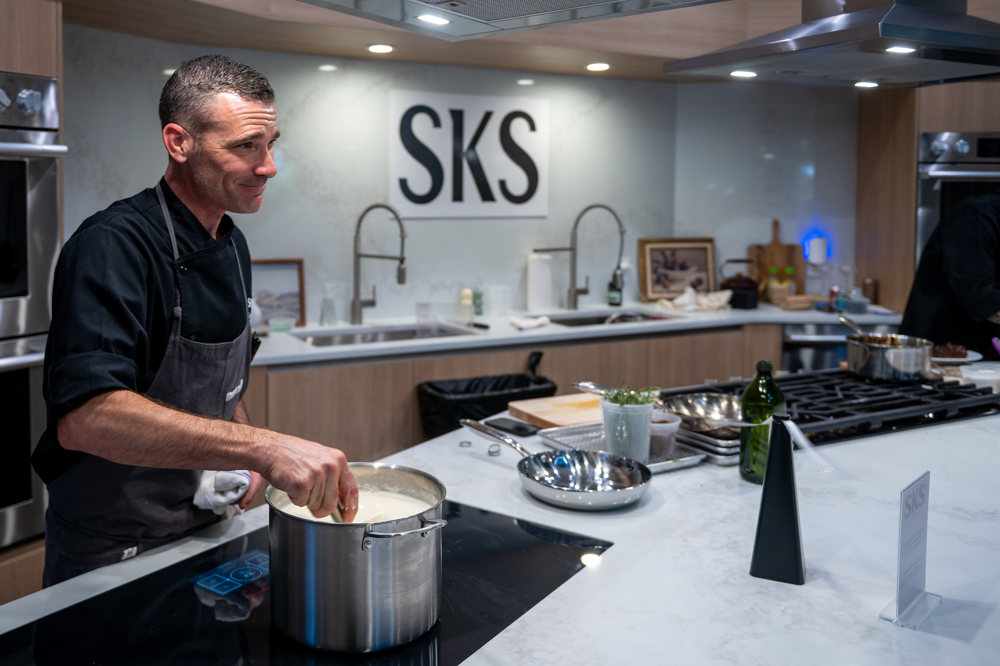

厨房智能硬件 / 厨房空间体验
SKS 携手 Serenbe 烹饪学校，让厨电走进真实课程
合作把冰箱、蒸汽烤箱、感应灶与洗碗机带进全年烹饪课程和主厨晚宴。

LG Electronics USA 于美国东部时间11月11日发布公告，旗下高端厨电品牌 SKS 与佐治亚州 Serenbe 社区烹饪学校合作。学校新近翻修，配备 SKS 冰箱、蒸汽组合双层烤箱、感应灶、燃气灶、洗碗机与烟机，计划举办动手课程、主厨晚宴和全年烹饪活动。
这条消息的重点不是新型号，而是品牌把产品放进持续运营的体验场景：居民、访客、设计师和潜在购房者可以在实际烹饪中接触设备。现场图来自 Porchfest 厨师演示；合作公告未披露具体课程日程或参与人数。
LG Electronics USA / PR Newswire｜SKS 与 Serenbe Cooking School 合作公告 · 2026-11-11 09:00 ET（北京时间11月11日22:00）LG Electronics USA / PR Newswire｜Porchfest 现场图 · 2026-11-11官方公告：2026-11-11 09:00 ET（北京时间11月11日22:00），在本期近24小时检索窗口内。